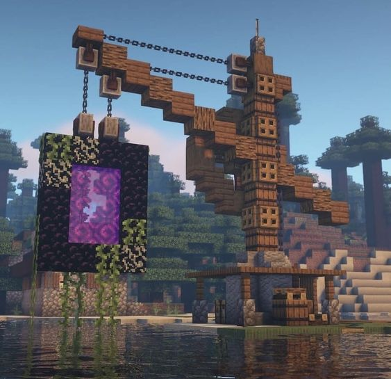
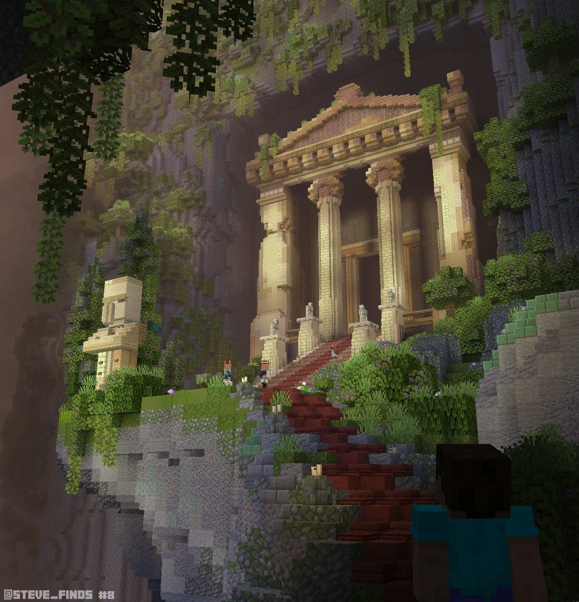

Construction d’un monde meilleur
Minecraft est bien plus qu’un simple jeu. C’est un moyen pour nous de créer un meilleur avenir pour tous.
Nous travaillons avec des organisations extraordinaires dans le monde entier pour sensibiliser à des causes importantes et inspirer des actions par le jeu. La puissance de Minecraft permet aux membres de notre communauté (et au-delà) de créer facilement de véritables changements.
Nos initiatives Construction d’un monde meilleur se présentent sous toutes les formes et tailles, et chacune d’entre elles réalise quelque chose d’unique et de précieux à sa manière. Au fil du temps, nous avons compris que Minecraft et sa formidable communauté réalisaient de grandes choses dans trois domaines particulièrement importants pour nous : l’éducation, l’équité, et la durabilité.
Vous êtes notre source d'inspiration
Nous ne sommes pas les seuls à réaliser des choses extraordinaires. Des initiatives de construction d'un monde meilleur se multiplient dans le monde entier. Notre communauté est extraordinaire.
Sodium Extra
Sodium Extra est un complément essentiel pour ceux qui cherchent à affiner les performances graphiques de Minecraft tout en bénéficiant d’options visuelles améliorées.
Pastel Shaders
Le Pastel Shaders est un shader esthétique conçu pour transformer l’apparence visuelle de Minecraft avec des palettes de couleurs douces et pastel.
Hypixel
Hypixel est connu pour son travail sur le mode de jeu original Bedwars, qui a été un succès majeur au moment de sa création et de son innovation.
OneCube
Le serveur Minecraft annoncé par Inoxtag lors du ZEvent 2021 va enfin ouvrir ses portes …
AI Improvements
AI Improvements est un mod conçu pour optimiser les performances des intelligences artificielles dans Minecraft, en particulier dans les environnements fortement modifiés.
DawnCraft
DawnCraft – Echoes of Legends vous invite à plonger dans une aventure dense et exigeante, où chaque étape est marquée par de nouveaux défis.
Sea Diary
Sea Diary est en quelque sorte l'une des constructions ultimes de Minecraft ! Véritable citée marine, à moitié immergée, elle déborde de détails.
Rubidium
Rubidium est un mod pour Minecraft conçu comme un fork non officiel de Sodium, spécialement adapté pour fonctionner avec le mod loader Forge.
Minecraft Forge
Forge est ce qu'on appelle un mod loader pour le jeu vidéo Minecraft. Comme son nom l'indique, il permet de charger un ou plusieurs mods.
BUILD VEDETTE
Découvrez les créations incroyables de notre communauté. Chaque build est une œuvre unique, pleine de créativité et d'ingéniosité. Plongez dans ces mondes fantastiques !
Chaque semaine, envoyez-nous vos créations, qu'elles soient gigantesques ou petites, détaillées ou non, vertes, rouges ou bleues ! Tentez de figurer chaque semaine sur notre page de builds hebdomadaire et gagnez en visibilité. Que vous soyez un nouveau builder ou un vétéran, c'est votre chance de briller !
Que le meilleur gagne !
Envoyez nous vos build !
-

Maison dans une Lune
"J'ai voulu créer quelque chose d'original, car j'en avais marre de construire des maisons au sol tout le temmps. Le seul problème, c'est : comment monter dans ma maison ?"by BuildWizard
-

Portail remonter de l'eau
"Un étrange portail a été remonté de l'eau hier dans l'après-midi. Les villageois et moi ne savons pas quoi faire, nous entendons des bruits très étranges émanant de ce portail."by EnderExplorer
-

Temple dans la Jungle
"J'ai voulu rendre hommage aux villageois qui se sont perdus dans la jungle, alors j'ai construit un temple en leur honneur."by CraftMaster
-

Maison sur un Arbre
"J'aime beaucoup les elfes, donc j'ai décidé de vivre comme eux, c'est-à-dire dans un arbre !"by CreeperHunter

Partagez votre histoire !
N’hésitez pas à nous contacter ! Faites-nous savoir comment vous utilisez le pouvoir de Minecraft pour construire un monde meilleur. Peu importe que vous organisiez une fête avec un message positif ou que vous utilisiez Minecraft pour améliorer votre nation ! Chaque geste compte.
Page non disponible
La page de partage d'histoires n'est pas encore disponible. Revenez plus tard !